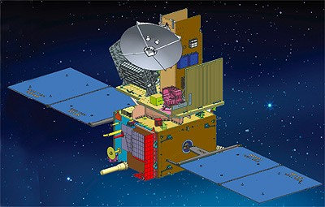

India's ocean-watching satellites. Sea surface temperature, chlorophyll concentration, ocean winds, monsoon prediction, cyclone tracking — Oceansat watches the Indian Ocean continuously, protecting millions of fishermen, predicting India's monsoon, and monitoring climate change in the waters that define the subcontinent's seasons.
Watch: Oceansat Launch LiveThe Oceansat series — beginning with Oceansat-1 in 1999 — is ISRO's dedicated ocean observation programme. These sun-synchronous satellites carry specialised instruments that measure the physical and biological properties of the ocean surface: sea surface temperature, ocean colour (chlorophyll concentration), wind speed and direction, and sea surface height.
India's relationship with the Indian Ocean is existential. The Indian Ocean monsoon delivers 80% of India's annual rainfall. The Bay of Bengal generates cyclones that kill thousands. The Arabian Sea's productivity sustains the livelihoods of over 4 million fishermen. Understanding and predicting ocean behaviour is not an academic exercise for India — it is a matter of national survival.
Oceansat data flows daily to the Indian National Centre for Ocean Information Services (INCOIS), which uses it to produce weather forecasts, fishery advisories, cyclone predictions, and ocean state forecasts distributed to government agencies, fishermen, coastal communities, and the Indian Navy.
Ocean Colour Monitor (OCM) — measures the colour of ocean water in multiple spectral bands. The colour of the ocean depends on what's in it: phytoplankton turn it green, sediment turns it brown, clear water is deep blue. OCM maps chlorophyll concentration — the foundation of the marine food chain — across the entire Indian Ocean every 2 days.
Sea Surface Temperature (SST) — thermal infrared sensors measure ocean surface temperature to within 0.5°C. SST is the primary driver of cyclone intensity (warm water fuels cyclones) and monsoon onset (SST gradients drive the monsoon circulation). Every cyclone track forecast in India uses Oceansat SST data.
Ku-band Scatterometer — microwave radar that measures ocean surface roughness to derive wind speed and direction. Ocean surface winds drive waves, currents, and upwelling — critical for fishery predictions and navigation warnings. On Oceansat-2, the scatterometer (OSCAT) developed a scanning mechanism anomaly mid-mission. Rather than losing the instrument entirely, ISRO scientists wrote new ground-processing algorithms that mathematically compensated for the degraded scanning pattern and recovered scientifically usable wind data. The instrument continued producing data for years longer than expected — a masterclass in fixing hardware failures with software.
India has over 4 million marine fishermen — operating small boats from thousands of coastal villages in Kerala, Tamil Nadu, Andhra Pradesh, Odisha, West Bengal, and Gujarat. Most operate within 12 nautical miles of shore, where their local knowledge of fishing grounds is good. But when fish move deeper offshore, fishermen face the choice of going further out — burning expensive fuel on an uncertain catch — or staying close and catching little.
ISRO's Potential Fishing Zone (PFZ) advisory service uses Oceansat data to identify zones where sea surface temperature gradients and chlorophyll concentrations suggest fish aggregations. These advisories are disseminated via SMS to fishermen's mobile phones, via village-level kiosks, and through the NavIC-based fishermen alert system. Fishermen who use PFZ advisories report fuel savings of 40–60% and catch increases of 30–50%.
Oceansat data also generates Ocean State Forecasts (OSF) — comprehensive marine weather products that include Significant Wave Height (SWH) (the average height of the highest one-third of waves — the critical safety parameter for vessel operations) and Mixed Layer Depth (MLD) (how deep the warm, well-mixed surface layer extends — critical for submarine operations and understanding cyclone intensification). The Indian Navy and Coast Guard use OSF data daily for safe navigation planning across the Indian Ocean. This is India's space programme at its most human — a satellite in orbit making a direct, measurable difference in the lives of some of India's most economically vulnerable communities.
Oceansat-3 (officially EOS-06), launched on November 26, 2022, is the most capable Indian ocean observation satellite ever flown. It carries the Ocean Colour Monitor-3 (OCM-3) with 13 spectral bands and a 1,400 km swath — covering the entire Indian Ocean in 2 days. It also carries a Sea Surface Temperature Monitor and the Ku-band scatterometer inherited from Oceansat-2.
A new addition on Oceansat-3 is the ARGOS data collection system — a French contribution that relays position and environmental data from thousands of ocean buoys, animal trackers, and remote sensors across the Indian Ocean back to ground stations. India is now part of the global ocean data collection network that underpins international ocean science.